A very important task in the process of configuring Meddbase is to create appointment types. Appointment Types are the 'blocks' booked on clinicians' schedules. An appointment is an encounter between a Medical Professional and the Patient.
Appointment types are generally umbrella terms such as ‘Initial Consultation’ and ‘Procedure’. You may want to break down appointments by length such as ‘Initial Consultation 15 mins’, ‘Initial Consultation 30 mins’.
What is the purpose of the article?
This article explains how to create and configure appointment types in Meddbase.
Create an Appointment Type
To create a new appointment type:
Go to the Start Page and click Admin > Appointment Admin.
On the Appointment Admin page, click New.
Enter the relevant details (see configuration options below).
Click Save.
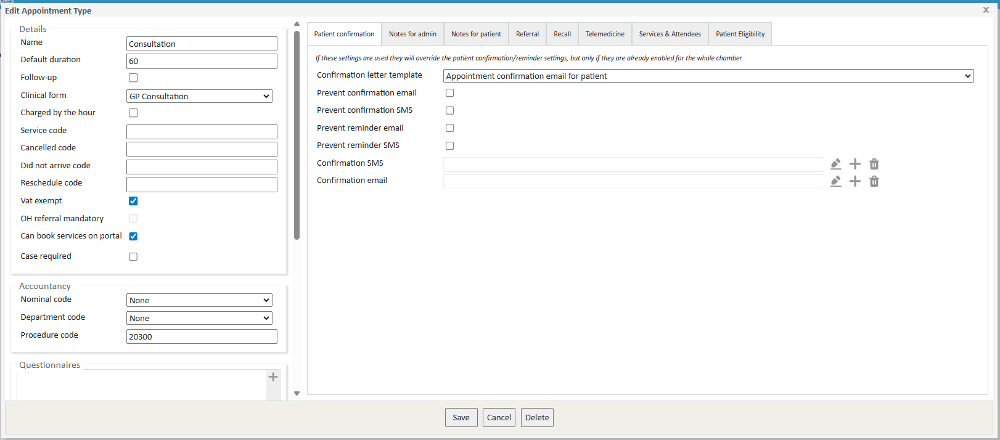
There are a number of configuration options on this page.
Appointment Type Details
Section
Field
Definition
Details
Name
Set the relevant name for the appointment type. This name will be visible1 in Meddbase when interacting this appointment type as well as on the Patient Portal2 for patient self-booking.
Default duration
The length of time the appointment is expected to take. This duration can be overriden during the booking process.
Follow up
When ticked/set to true, this checkbox allows this appointment type to be booked as follow-up from a previous appointment. When booking this appointment type via schedule, a list of previous appointments is presented and the user can select which one this booking is a follow up from. The list only shows previous appointments linked to an ongoing referral.
Clinical Form
Select the Clinical form from the dropdown to be used in Consultation for this appointment type by default. Click here for more details on Clinical Forms.
Charged by the hour
When ticked/set to true, this checkbox will cause the price of this appointment type to be calculated based on the price set in billing rules and the default/actual length of the booking and will be charged using a formula5
Service Code
An alphanumeric code can be entered here. This code can be reported on. Furthermore it will be used when this appointment type is consumed and charged for, as an additional description of the Billing item on an invoice.
Cancelled Code
An alphanumeric code can be entered here. This code will be used when this appointment type is booked and subsequently cancelled, as an additional description of the 'Cancellation' billing item on an invoice raised by the cancelling the appointment6
Did not arrive code
An alphanumeric code can be entered here. This code will be used when this appointment type is booked and the patient subsequently Did Not Arrive, as an additional description of the 'Did Not Arrive' billing item on an invoice raised by the marking the appointment as DNA.
Reschedule code
An alphanumeric code can be entered here. This code will be used when this appointment type is booked and subsequently rescheduled, as an additional description of the 'Rescheduling' billing item on an invoice raised by rescheduling the appointment.
Vat exempt
Define whether VAT charges are applied to this appointment type.
OH referral mandatory
When this appointment type is booked, it must be made into an OH referral.
Can book services on portal
This checkbox when ticked, allows services, e.g. Test or Vaccine, to be added to this appointment type when it is booked via the Patient Portal.
Case required
Requires a case to be assigned to the appointment before this appointment can be booked.
Accountancy
Nominal code
Nominal codes can be defined in Admin > Configuration > Accountancy and subsequently assigned to appointment types to sort them into groups.
Nominal Codes provide additional reporting options for accountants (on utilisation of this service). Nominal codes are also used in the integration with Xero and mapped to the chart of accounts.
Department code
Department codes can be defined in Admin > Configuration > Accountancy and subsequently assigned to appointment types to sort them into groups. Department codes can be reported on as well as used in the integration with Reviso.
Procedure Code
Assign a Procedure Code to the service. This is a space for CCSD codes to be automatically related to an appointment. This will be reflected in invoicing and support the HealthCode integration.
Questionnaires
Questionnaires
Add questionnaires for patients to fill out prior to appointment arrival (for use within the patient portal only).
Security
Medical Policy Applied
Defines whether a medical policy is applied for split medical records. This should only be set if using split medical records. To learn more about split medical records, see Enable Filtered /Split medical records.
Additional Appointment Type Details
The right-hand side of the window consists of multiple tabs, each containing specific settings.
Patient Confirmation
If these settings are used, they will override the default patient confirmation/reminder settings in Task Checker. However, they will only take effect if patient confirmations/reminders are already enabled for the entire chamber. Use this section if the appointment type requires specific/different confirmations.
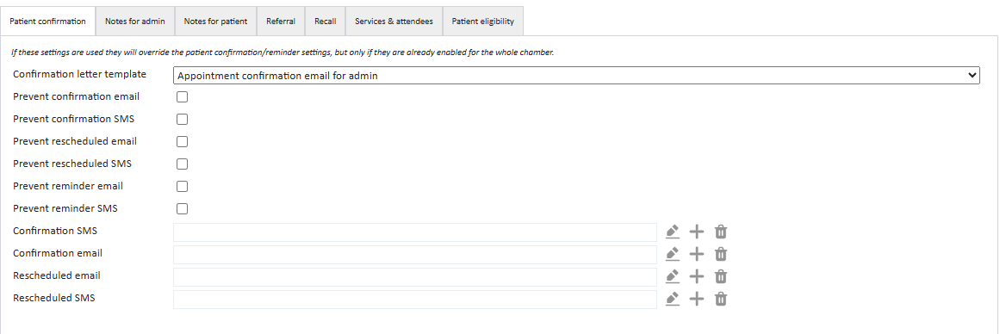
Field
Definition
Confirmation letter template
Set the template used for appointment confirmation letter.
Prevent confirmation email
This checkbox when ticked prevents any appointment confirmation emails from being sent for this appointment type.
Prevent confirmation SMS
This checkbox when ticked prevents any appointment confirmation SMS from being sent for this appointment type.
Prevent rescheduled email
This checkbox, when checked, prevents any appointment rescheduling emails from being sent for this appointment type.
Prevent rescheduled SMS
This checkbox, when checked, prevents any appointment rescheduling SMS confirmations from being sent for this appointment.
Prevent reminder email
This checkbox when ticked prevents any appointment reminder emails from being sent for this appointment type.
Prevent reminder SMS
This checkbox when ticked prevents any appointment reminder SMS from being sent for this appointment type.
Confirmation SMS template
Set the template used for appointment SMS confirmations for this appointment type.
Confirmation email template
Set the template used for appointment email confirmations for this appointment type.
Rescheduled email
Set the template used for appointment rescheduling emails for this appointment type.
Rescheduled SMS
Set the template used for appointment rescheduling SMS confirmations for this appointment type.
Notes for Admin
This section allows adding a message that will be displayed as an on-screen pop-up to the Meddbase user booking this appointment type. The user must accept the message before continuing.
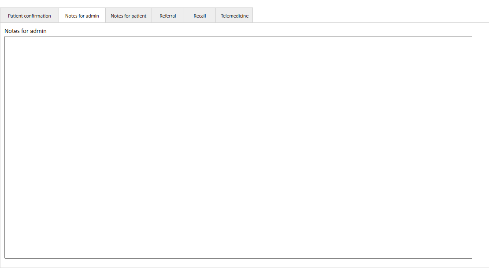
Notes for Patient
This section allows adding a message that will be displayed on the Patient Portal* under this appointment type name when it's selected for booking by the patient.
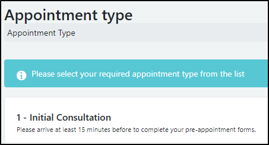
If you wish for a message box to appear instead, in the Public Notes for Patient area add the following to the top of your message:
**NOTIFICATION**
Click save once done.
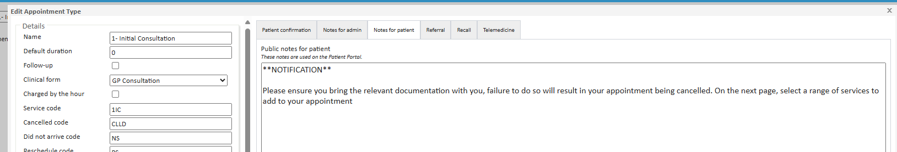
In the Patient Portal, once the patient selects an appointment, a window will pop up with the public note, and they must click continue or no, cancel to proceed.
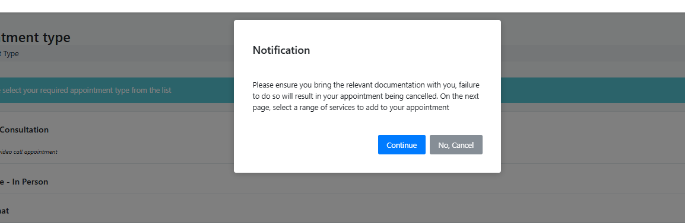
Referral
This tab is specifically for Occupational Health. Any appointment type can be used for an Occupational Health referral, however, the appointment type must have at least one associatedspecialism to be referred.
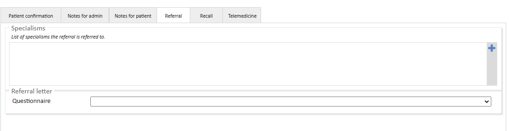
Field
Definition
Specialisms
Choose a specialism from the catalogue. For OH referrals, the default is the Occupational Health specialism. This is visible in reporting and the incoming referral task.
Referral Letter Questionnaire
Set the referral questionnaire to be completed by the referring manager at the time of referring in the OH Portal. If left blank, no form is required, and this step will be skipped during the referral process.
Recall
Define automatic recall settings. To learn more about recalls, see Recalls.
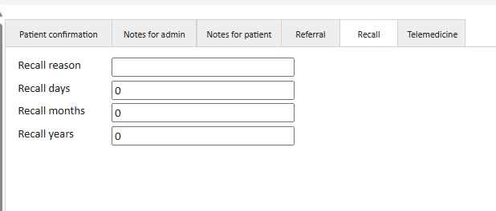
Field
Definition
Recall reason
Define the reason for a recall for this appointment type
Recall reason
Set the number of days a recall should be generated after this appointment type has been consumed.
Recall months
Set the number of months a recall should be generated after this appointment type has been consumed.
Recall years
Set the number of years a recall should be generated after this appointment type has been consumed.
Telemedicine
Configures settings for telemedicine consultations.
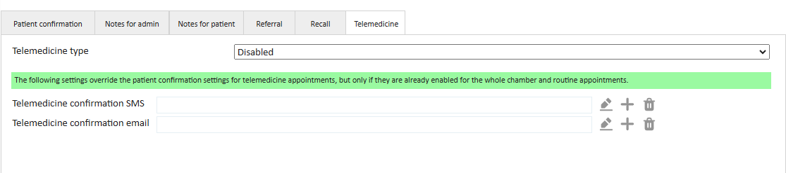
Field
Definition
Telemedicine Type
Choose whether this appointment type is a telemedicine appointment. This setting needs to be configured if the appointment is telemedicine-based.
Options include:
Disabled - when this option is selected, Telemedicine is disabled for this appointment type
Enabled by default - when this option is selected, Telemedicine is enabled for this appointment type and can be disabled during the booking process
Can be enabled at booking time - when this option is selected, Telemedicine is disabled for this appointment type and can be enabled during the booking process
Mandatory - when this option is selected, Telemedicine is enabled for this appointment type and can not be disabled during the booking process
Telemedicine confirmation SMS
Set the template used for telemedicine SMS confirmations for this appointment type.
This setting overrides the patient confirmation email for telemedicine appointments, but only if patient confirmations are enabled for the entire chamber and routine appointments.
Telemedicine confirmation email
Set the template used for telemedicine email confirmations for this appointment type. This setting overrides the patient confirmation email for telemedicine appointments, but only if patient confirmations are enabled for the entire chamber and routine appointments.
Services & Attendees
Configure settings for automatically included services and set the structure of attendees for the appointment type. This is similar to a module type service.
This is feature must be enabled in your chamber before it can be used. If you would like this feature, please reach out to our support team.
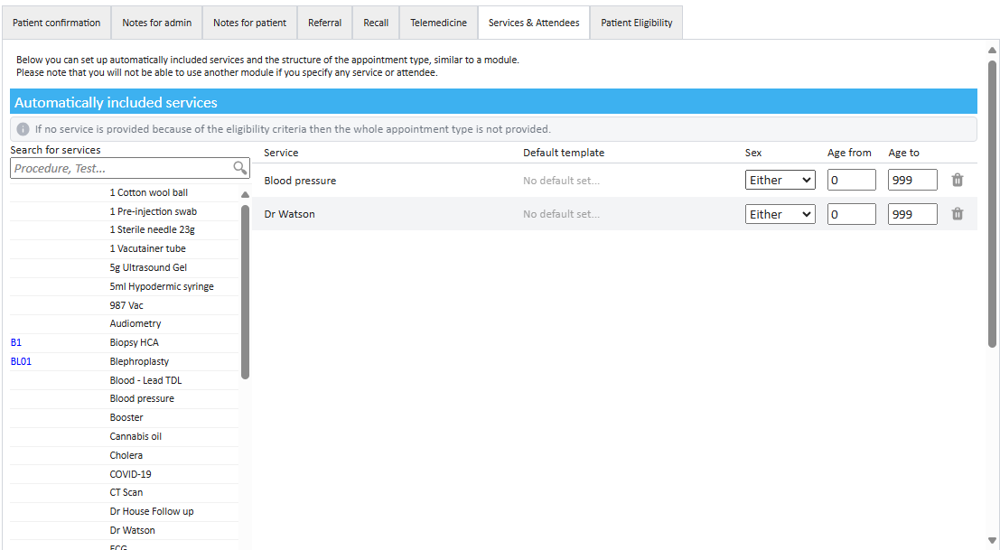
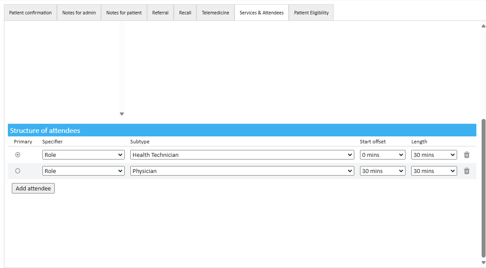
Field
Definition
Automatically Included Services
This setting allows you to search for and add services that have already been defined in Service Management, so that they are automatically included whenever this appointment type is booked.
You can configure which services are automatically attached to the appointment, without needing to add them manually at the point of booking.
Once a service has been added to the appointment type, you can set Patient Eligibility criteria for that service: Sex and Age.
If a patient does not meet the criteria for a given service, that service is automatically removed from the appointment and is not provided.
Structure of Attendees
Structured Attendees allows you to add attendee specifications to the appointment type, in the same way as Modules.
You can include multiple attendees, assign a primary attendee (who is shown in the slot finder and leads the appointment), and configure each attendee’s start offset and duration. The system will then automatically find the required attendees based on their role or specialism, and match their availability with the primary attendee. The total time specified here is added to the Default Duration for the appointment type.
Example: An appointment may require a Nurse and a Doctor, but at different times. The system ensures that both professionals are available within the same overall appointment slot, automatically coordinating their availability with that of the primary attendee.
Patient Eligibility
Configure settings for which patients can be booked in for this appointment type.
![[Full alt text]](images/Appointment%20Admin%20-%20Notes%20for%20Patient.png)
![[Full alt text]](images/Telemedicine%20can%20be%20enabled%20at%20booking%20time.png)